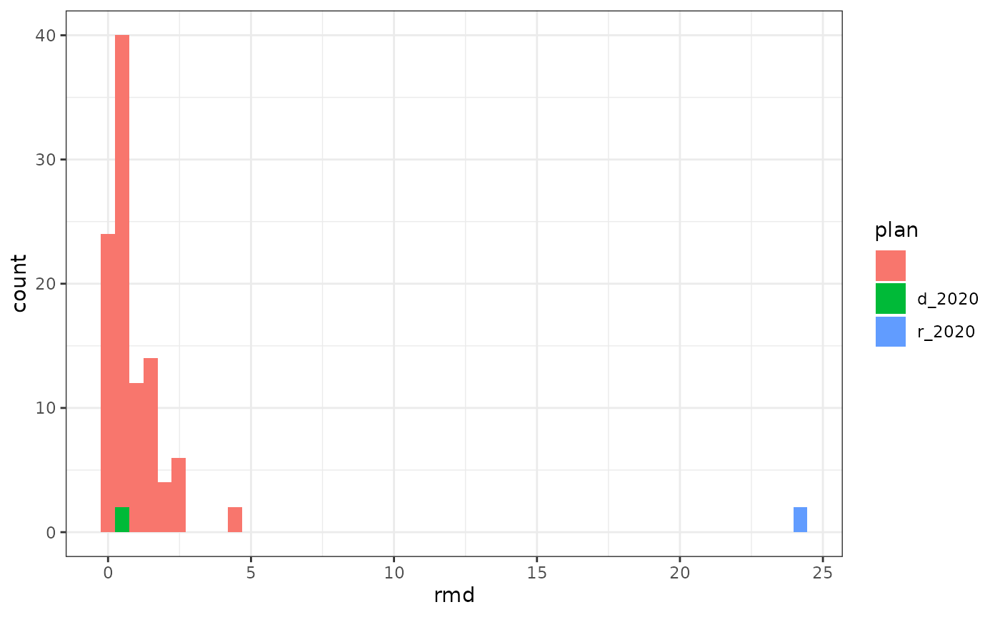

There are hundreds of different measures of partisan advantage, most typically attempting to describe “partisan symmetry”. This vignette introduces some of the most common and most important measures of partisan advantage. See the vignette “Using redistmetrics” for the bare-bones of the package.
We first load the redistmetrics package and data from New Hampshire. For any function, the shp argument can be swapped out for your data, rvote and dvote for any two party votes, and the plans argument can be swapped out for your redistricting plans (be it a single plan, a matrix of plans, or a redist_plans object).
library(redistmetrics)
data(nh)For illustration purposes, we utilize what is often called the “normal Democratic vote” ndv and the “normal Republican vote” nrv which are the averages of the recent elections by party. For most purposes beyond basic description, you would want to compute these scores for several elections and then average the scores.
This is a brief introduction to the measures included in the package. For a more thorough, yet still friendly introduction, we recommend Katz, King, and Rosenblatt (2020).
The Democratic vote share is the vote share by district under fixed Democratic and Republican votes.
All scores range from 0 to 1, where a higher proportion indicates a more Democratic voters in a district relative to Republican voters.
Formally, for each district, this can be written as:
\[ \textrm{voteshare}_D = \sum_{i = 1}^{n_{\textrm{voters}}} \frac{\mathbb{1}\{\textrm{vote}(i) == D\} }{\mathbb{1}\{\textrm{vote}(i) \in D, R\} }\]
The Democratic vote share can be computed with:
part_dvs(plans = nh$r_2020, shp = nh, dvote = ndv, rvote = nrv)
#> [1] 0.4387424 0.5378594Democratic seats is the number of seats that Democrats would win under fixed Democratic and Republican votes.
All scores are between 0 and the number of districts.
Formally, this can be written as:
\[ \textrm{Seats}_D = \sum_{d = 1}^{n_\textrm{ndists}} \textrm{voteshare}_D > 0.5\]
Democratic seats can be computed with:
part_dseats(plans = nh$r_2020, shp = nh, dvote = ndv, rvote = nrv)
#> [1] 1 1Partisan bias is the deviation from partisan symmetry at a voteshare \(v\).
Positive scores indicate bias in favor of Republicans, while negative scores indicate bias in favor of Democrats. Scores are in the range of -1 to 1.
Formally, this can be written as:
\[\textrm{Partisan Bias} = \frac{\textrm{Seats}_D(\textrm{voteshare}_D) - (1 - \textrm{Seats}_D(1 - \textrm{voteshare}_D))}{2}\]
Partisan Bias can be computed with:
part_dvs(plans = nh$r_2020, shp = nh, dvote = ndv, rvote = nrv)
#> [1] 0.4387424 0.5378594The argument \(v\) (for \(\textrm{voteshare}_D\)) can be set for any value in \(0\) to \(1\) and is \(0.5\) by default.
Responsiveness describes the slope of the implied seats-votes curve by an election. A higher score implies that a districting plan is more likely to change given a change in vote distribution.
Formally, this can be written as:
\[\textrm{Responsiveness} = \frac{\textrm{Seats}_D(\textrm{voteshare}_D + b) - \textrm{Seats}_D(\textrm{voteshare}_D - b)}{b}\] where \(b\) is a user-specified bandwidth.
Responsiveness can be computed with:
part_resp(plans = nh$r_2020, shp = nh, dvote = ndv, rvote = nrv)
#> [1] 0 0The argument v can be set for any value in \(0\) to \(1\) and is \(0.5\) and the bandwidth is \(0.1\) by default.
Note that the responsiveness can be very sensitive to bandwidth. For example, in the above we get values of 0. If we widen the bandwidth, the results change drastically!
part_resp(plans = nh$r_2020, shp = nh, dvote = ndv, rvote = nrv, bandwidth = 0.1)
#> [1] 10 10The declination describes the difference in the angle of two line through ordered an ordered scatter plot of Democratic and Republican votes, where one line is fit to the center of mass for each.
The normalized declination can take on values from -1 to 1, where a negative score indicates a pro-Democratic bias and positive score indicates a pro-Republican bias. The declination is not defined when one party wins all seats. When not normalized, the scores are in radians, and the negative and positive interpretations stay the same.
Formally, this can be written as:
\[\textrm{Declination} = 2 * \frac{\textrm{atan}\big(\frac{\bar{D}_{\textrm{voteshare}_D} - 0.5}{\textrm{S}_D(\textrm{voteshare}_D)}\big) - \textrm{atan}\big(\frac{0.5 - \bar{R}_{(\textrm{voteshare}_D)}}{1 - S_D(\textrm{voteshare}_D)}\big)}{\pi}\]
introducing \(\bar{D}_{\textrm{voteshare}_D}\) as the average Democratic voteshare in Democratic-won districts and \(\bar{R}_{\textrm{voteshare}_D}\) as the average Democratic voteshare in Republican-won districts. \(S_D\) is the Democratic seat share.
Declination can be computed with:
part_decl(plans = nh$r_2020, shp = nh, dvote = ndv, rvote = nrv)
#> [1] -0.01022275 -0.01022275By default, declination is normalized to a fraction of an angle, via the normalization argument. Setting normalization = FALSE returns a variant of the declination in radians:
\[\textrm{Declination}^r = \textrm{atan}\big(\frac{\bar{D}_{\textrm{voteshare}_D} - 0.5}{\textrm{Seats}_D(\textrm{voteshare}_D)}\big) - \textrm{atan}\big(\frac{0.5 - \bar{R}_{(\textrm{voteshare}_D)}}{1 - (\textrm{voteshare}_D)}\big)\]
An additional adjustment can be applied which takes the form:
\[\textrm{Declination}^* = \textrm{Declination}*\frac{\log(n_{dists})}{2}\]
The correction is applied by default to better allow for comparison across states, though these comparisons should be made cautiously, as always.
An simplified formulation of the declination is sometimes used to avoid using normalizing constants and arctangents. This instead looks at the difference in means of wins over the seat proportions:
\[\textrm{Simplified Declination} = \frac{\bar{D}_{\textrm{voteshare}_D} - 0.5}{\textrm{S}_D(\textrm{voteshare}_D)} - \frac{0.5 - \bar{R}_{\textrm{voteshare}_D}}{1 - S_D(\textrm{voteshare}_D)}\]
with \(\bar{D}_{\textrm{voteshare}_D}\) as the average Democratic voteshare in Democratic-won districts and \(\bar{R}_{\textrm{voteshare}_D}\) as the average Democratic voteshare in Republican-won districts. \(S_D\) is the Democratic seat share.
As in the declination, a negative score indicates a pro-Democratic bias and positive score indicates a pro-Republican bias.
part_decl_simple(plans = nh$r_2020, shp = nh, dvote = ndv, rvote = nrv)
#> [1] -0.04679648 -0.04679648The Mean Median Score is the difference between the mean Democratic vote share and the median Democratic district. This means that a negative score is in favor of Democrats and a positive score is in favor of Republicans. The score can range from -1 to 1.
Formally, this can be written as:
\[\textrm{Mean-Median} = \textrm{mean}(\textrm{voteshare}_D) - \textrm{median}(\textrm{voteshare}_D)\]
The Mean-Median score can be computed with:
part_mean_median(plans = nh$r_2020, shp = nh, dvote = ndv, rvote = nrv)
#> [1] 0 0The Lopsided Wins score indicates if a party tends to win by a larger margin than the other party. A negative score indicates a pro-Democratic bias, whereas a positive score indicates a pro-Republican bias. Scores can range from -1 to 1.
Formally, this can be written as:
\[\textrm{Lopsided Wins} = \bar{D}_{\textrm{voteshare}_D} - (1 - \bar{R}_{\textrm{voteshare}_D})\]
with \(\bar{D}_{\textrm{voteshare}_D}\) as the average Democratic voteshare in Democratic-won districts and \(\bar{R}_{\textrm{voteshare}_D}\) as the average Democratic voteshare in Republican-won districts.
The Lopsided Wins score can be computed with:
part_lop_wins(plans = nh$r_2020, shp = nh, dvote = ndv, rvote = nrv)
#> [1] -0.02339824 -0.02339824The output of this can be used for a t-test.
The Efficiency Gap describes the difference in wasted votes by a party. Wasted votes are those which don’t lead to a win (votes from the party lost that district) and those which weren’t necessary for a win (the excess votes above 50% + 1 vote by the party that won the district). These are normalized by the votes for the party, leading to a score between -1 and 1. A negative score indicates a pro-Democratic bias, whereas a positive score inidcates a pro-Republican bias.
Formally, this can be written as:
\[\textrm{Efficiency Gap} = \frac{W_R - W_D}{n_{votes}}\]
with \(W_R\) as the wasted votes by Republicans and \(W_D\) as the wasted votes by Democrats and \(n_{votes}\) are the total votes.
Wasted votes can be formalized as:
$$ W_D =
{ \begin{array}{ll} n_{_D} -( () + 1) & D > 0.5 \ n{_D} & _D < 0.5\ \end{array} . $$
Republican wasted votes are defined analogously.
The Efficiency Gap can be computed with:
part_egap(plans = nh$r_2020, shp = nh, dvote = ndv, rvote = nrv)
#> [1] -0.02007106 -0.02007106This is the efficiency gap, with the assumption that parties have equal voter turnout and population. The scale is the same as for the regular efficiency gap, where all scores are between -1 and 1, with negative implying pro-Democratic bias and positive implying pro-Republican bias.
Formally, this can be written as:
\[ \textrm{Efficiency Gap (Eq. Pop.)} = -2 * \textrm{voteshare}_D + S_D + 0.5\] with \(S_D\) as the seat share for Democrats.
The Efficiency Gap (Equal Population) can be computed with:
part_egap_ep(plans = nh$r_2020, shp = nh, dvote = ndv, rvote = nrv)
#> [1] -0.02339824 -0.02339824The \(\tau\) gap is a generalization of the efficiency gap. When \(\tau = 1\), it is exactly twice the efficiency gap. The \(\tau\) parameter is a weighting parameter which describes how wasted votes should be weighted.
Formally, this can be written as:
\[ \tau\textrm{-Gap} = \frac{w_{D,\tau} - w_{R,\tau} }{w_{D,\tau} + w_{R,\tau}}\] where
\[w_{D, \tau} = \sum_{d = 1}^{n_\textrm{dists}} \frac{1}{\tau + 1} (2 * voteshare_D - 1)^{\tau + 1}) \]
and \(w_R\) is defined analogously.
The \(\tau\) Gap can be computed with:
part_tau_gap(plans = nh$r_2020, shp = nh, dvote = ndv, rvote = nrv)
#> redistmetrics 1.0.2 reverses tau gap direction. Positive is now pro-Republican
#> bias.
#> This message is displayed once per session.
#> [1] -0.009276655 -0.009276655The default is tau = 1.
The Smoothed Seat Count Deviation offers an interpolation between seats when describing the number of seats won by a party. This can be added to the Democratic seats to describe the smoothed seat count.
As such, values are between 0 and 1, where 0 favors Republicans and 1 favors Democrats.
Formally, this is written as:
\[\textrm{SSCD} = \frac{0.5 - \min(D_{\textrm{voteshare}_D} )}{(1 - \max(R_{\textrm{voteshare}_D} )) - (1 - \min(D_{\textrm{voteshare}_D}))}\] where \(D_\textrm{voteshare}_D\) is the Democratic vote share in Democratic-won districts and \(R_\textrm{voteshare}_D\) is the Democratic vote share in Republican-won districts.
The Smoothed Seat Count Deviation can be computed with:
part_sscd(plans = nh$r_2020, shp = nh, dvote = ndv, rvote = nrv)
#> [1] 0.3819666 0.3819666The Ranked Marginal Deviation is also known as the Gerrymandering Index. Given a set of plans, we can first order them by Democratic percent in each seat. The Ranked Marginal Deviation is the square root of the sum of the squared distances between the average Democratic percent in each seat and the Democratic percent in a given plan.
Formally, this can be written as:
\[\textrm{Ranked Marginal Deviation} = \sum_{d = 1}^{n_\textrm{dists}} \textrm{voteshare}^s_{D}(d) - \overline{\textrm{voteshare}^s_{D}(d)}\]
where \(\textrm{voteshare}^s_{D}(d)\) is the \(s\)orted Democratic voteshare in district \(d\) and is the average of those across plans.
As such, it is sensitive to the plans inputted. Here we use the nh_m data described in the “Using redistmetrics” vignette, which contains 2 reference plans and 50 simulated plans.
data(nh_m)
part_rmd(plans = nh_m, shp = nh, dvote = ndv, rvote = nrv)
#> [1] 0.428370470 0.428370470 24.235421388 24.235421388 2.552997871
#> [6] 2.552997871 1.809043831 1.809043831 1.429493267 1.429493267
#> [11] 0.014890062 0.014890062 0.126809872 0.126809872 0.318627988
#> [16] 0.318627988 0.242831249 0.242831249 0.373011020 0.373011020
#> [21] 0.361538434 0.361538434 0.148772309 0.148772309 1.429493267
#> [26] 1.429493267 0.242831249 0.242831249 1.327300472 1.327300472
#> [31] 0.014890062 0.014890062 0.484450127 0.484450127 1.809043831
#> [36] 1.809043831 0.510055158 0.510055158 0.838740617 0.838740617
#> [41] 0.816550318 0.816550318 0.484450127 0.484450127 4.300606277
#> [46] 4.300606277 0.350729311 0.350729311 1.095627372 1.095627372
#> [51] 0.510055158 0.510055158 0.006126619 0.006126619 0.816550318
#> [56] 0.816550318 0.510055158 0.510055158 0.411542635 0.411542635
#> [61] 0.210448284 0.210448284 0.407899710 0.407899710 0.981914177
#> [66] 0.981914177 0.126809872 0.126809872 0.433177164 0.433177164
#> [71] 2.715473150 2.715473150 0.014890062 0.014890062 1.281220886
#> [76] 1.281220886 0.574561053 0.574561053 0.484450127 0.484450127
#> [81] 0.406901915 0.406901915 0.008658526 0.008658526 0.008658526
#> [86] 0.008658526 0.361538434 0.361538434 0.350729311 0.350729311
#> [91] 0.466205978 0.466205978 1.315020633 1.315020633 1.315020633
#> [96] 1.315020633 0.466205978 0.466205978 0.805815516 0.805815516
#> [101] 2.613608371 2.613608371 1.281220886 1.281220886This score is intended for comparison, which we can display as a plot such as:
library(ggplot2)
dplyr::tibble(rmd = part_rmd(plans = nh_m, shp = nh, dvote = ndv, rvote = nrv),
plan = rep(colnames(nh_m), each = 2)) %>%
ggplot() +
geom_histogram(aes(x = rmd, fill = plan), bins = 50) +
theme_bw()
In this (small) set of simulations, the Democratic 2020 proposal is more similar to the simulated plans than the Republican 2020 proposal.